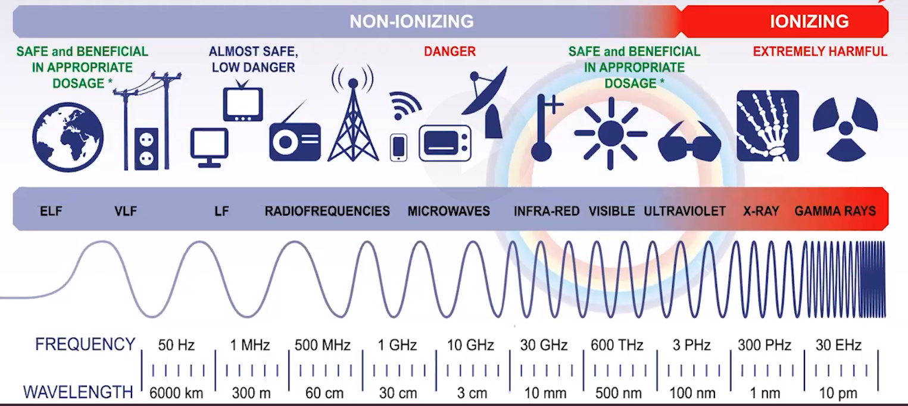

Spectroscopy - the study of matter's interactions with electromagnetic radiation
Molecules can absorb/emit radiation in different regions of spectrum
Those regions are associated with molecular motion/electronic transitions
| Microwave radiation | transitions in molecular rotational levels |
|----------------------|-----------------------------------------------------|
| Infrared radiation | transitions in molecular vibrational levels |
| UV/visible radiation | transitions in molecular electron energy levels |
{width="9.5625in" height="4.28125in"}